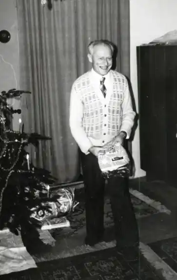

Він народився 1922 року у Френштаті біля Радгочштема, але хлопчиком разом із батьками переїхав до Праги, оскільки його батько, професійний військовий, став високопоставленим офіцером Генерального штабу.
У 1941 році закінчив реальну гімназію в Празі, а потім працював у Батовому заводі в Зліні.
Після закінчення Другої світової війни в 1945–1949 рр. вивчав медицину в Карловому університеті, потім закінчив офіцерські курси у військовому госпіталі, але в армії не працював. Працював хірургом у Локті та Карлових Варах та лікарем загальної практики в Яхимові. Тут він захворів на туберкульоз і був змушений на деякий час залишити медичну практику. Потім він працював терапевтом у ЧКД у Празі, а з початку 1960-х років до виходу на пенсію у 1984 році працював хірургом у лікарні Жижкова. Він також займався акупунктурою і був одним із провідних чеських фахівців у цій галузі. Завдяки своїм великим знанням мови він незабаром зайнявся перекладом. Спочатку він перекладав науково-популярні тексти, але невдовзі зайнявся й художньою, особливо науковою. Звідти був лише крок до власної роботи. У 1970 році, коли він опублікував збірку науково-фантастичних оповідань "Вторгнення із Всесвіту", його почали вважати разом із Йозефом Несвадбою, Людовіком Соучеком і Ярославом Зикою одним із піонерів чеської наукової фантастики та представником свого роду "чеської школи", заснованої на гуманістичній спадщині Карела Чапека. Він помер у 1990 році у віці 67 років від серцевого нападу. У 1992 році він посмертно отримав нагороду Карела Чапека – Ньюта за заслуги. Наукова та науково-популярна література: "Чудесна матерія" (1965), популярна книга, що описує історію еволюції Всесвіту та наукові гіпотези в галузях фізики та астрономії. "Лікарі та маги" (1967), популярно написана історія медицини та методів лікування в різних народів від доісторичних часів приблизно до 18 століття. Метал і вогонь: Акупунктура (1974), книга про стародавні методи лікування, особливо китайську акупунктуру, друге видання доповнене в 1987 році і третє під назвою Акупунктура, точковий масаж і китайська гімнастика, або Метал і вогонь 1997. Основи традиційної акупунктури (1985), Підручник з акупунктури. Художня література: До збірки науково-фантастичних оповідань "Вторгнення з космосу" (1970) входять оповідання "Селера Герона", "Пухлина", "Рід", "Кошеня", "Дракон", "Безформна матерія", "Гра тіней", "Ляльковий бал", "Нерозв'язне питання" та Павуки. Друге видання в 2003 році було розширено, включивши історію Курупіри. "Пояс" (1983), оповідання, опубліковане в антології "Залізо приходить із зірок". "Сонячна машина" (1983), оповідання, опубліковане в антології "Залізо приходить із зірок". "Сад богів" (1990), пригодницький роман про колонізацію Західної Африки в 6 столітті. до н.е.